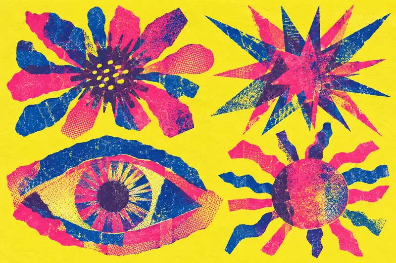

НЕЗАВИСИМАЯ ПЕЧАТНАЯ КУЛЬТУРА / EST. 2026ЦИФРОВОЙ ВЫПУСК № 01
ДЕЛАЙ
ШУМ
Плакат — это маленький
повод не пройти мимо.



ЭТОНЕ
ТИШИНАЦВЕТ / БУМАГА / СВОБОДА
НЕ
ИДЕАЛЬНО.
ОТЛИЧНО.
ИДЕАЛЬНО.
ОТЛИЧНО.
СВЕЖЕЕ НА СТЕНЕ / 08 ЛИСТОВУ КАЖДОГО
Вся выставка ↗У КАЖДОГО
ЛИСТА ГОЛОС.
ТВОЯ ОЧЕРЕДЬ / БЕЗ РЕГИСТРАЦИИА ЧТО
А ЧТО
ЕСЛИ
ПО-СВОЕМУ?
Два слова. Три цвета. Одна странная форма.
Собери свой цифровой плакат и забери файл.
Мы за плакаты, у которых
есть характер.
За буквы, которым
тесно в строке.
За ошибку, которая
оказалась лучшей частью.
ЗАМЕТКИ С КРАЯ СТОЛАЕСТЬ ЧТО
Весь журнал ↗